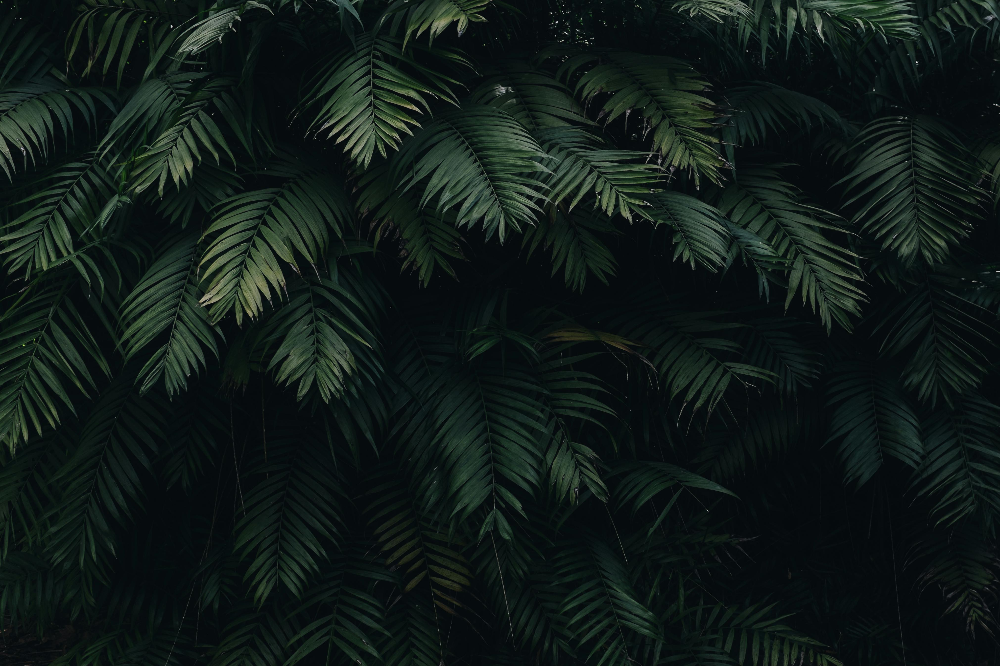
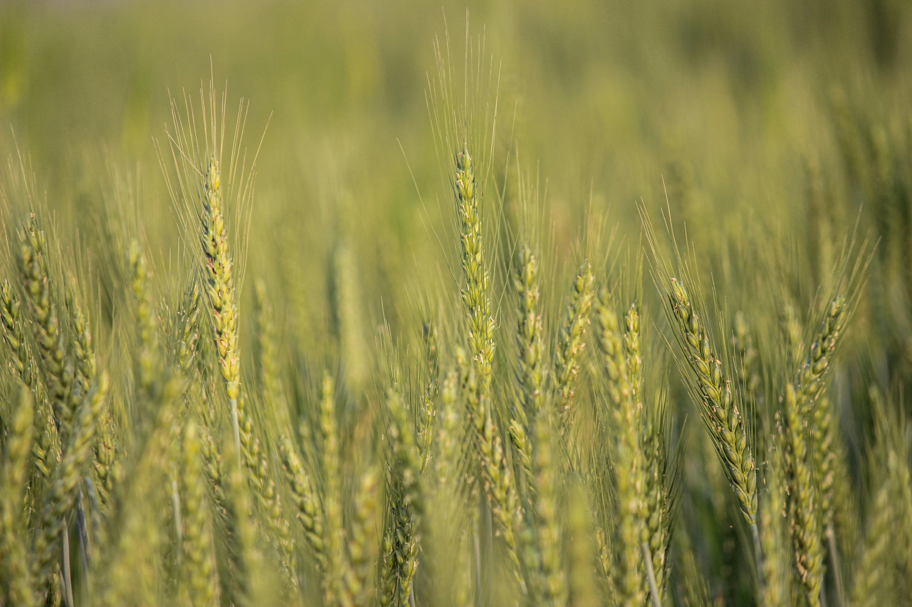

Community Farms for a Greener, Cooler & More Meaningful Future
Who We Are
We are Greenera Farms, a climate-resilient community farm which is a self-reliant and self-sustaining ecosystem where people come together to build resilient infrastructure, regenerate natural resources, and adopt a climate-adaptive lifestyle in harmony with nature.
At its core, it is about caring for the soil, growing healthy food, supporting people and communities, and creating a resilient future.
Explore Community Model →
The Model
The project follows a hybrid ownership model, where farm spaces are individually registered, while infrastructure, development, and maintenance are shared and collectively managed.
To respond to:
It offers:
It delivers:
Made for:

Farm Features
The Fields

Questions
To reconnect with nature, build a meaningful family space, and gradually transition towards a healthier and more sustainable way of living, while sharing the journey with like-minded people through a community-driven farm ecosystem.
Yes, it is also an organic farm, in-fact it focuses on regenerative agriculture and food forests, and will be maintained as a zero input / no-till farm in the long run.
No. While each member's land portion is individually registered in their name, the entire farm is planned, developed, and maintained as a single integrated ecosystem. This community-based approach enables better land stewardship, shared infrastructure, efficient maintenance, and a stronger sense of collective ownership.
No, it is not!
No. Only about 10% of the farm area will be allocated for regular cultivation, which will be managed by the farm staff. Members are welcome to participate in farming activities whenever they wish and as their schedule permits.
During the initial three years, the GreenEra Team will nurture and manage the farm ecosystem, infrastructure, and common services. Thereafter, an Association of farm members will be formed to collectively steward and sustain the community farm for the long term.
Yes, Families are welcome to visit and stay at the farm. GreenEra Farms is a community farm, not a resort, so the focus is on nature-connected living and shared community spaces rather than full-service hospitality.
Yes. Families who wish to transition towards a nature-connected rural lifestyle can choose to settle at the farm. GreenEra Farms can provide guidance and support to help make the transition from urban to rural living smoother and more informed.
Yes. If your circumstances or priorities change, you may choose to exit the community. In such cases, your ownership can be transferred to a new participant, subject to the community's guidelines. Existing members or other interested participants can take over the ownership, subject to mutually agreed terms.
Simply fill out this Google Form and we will connect with you and guide you at your own pace.
Get In Touch
Whether you're curious about membership, planning a visit, or just want to say hello — we'd love to hear from you.
life@greenerafarms.inGrowing goodness, one season at a time.